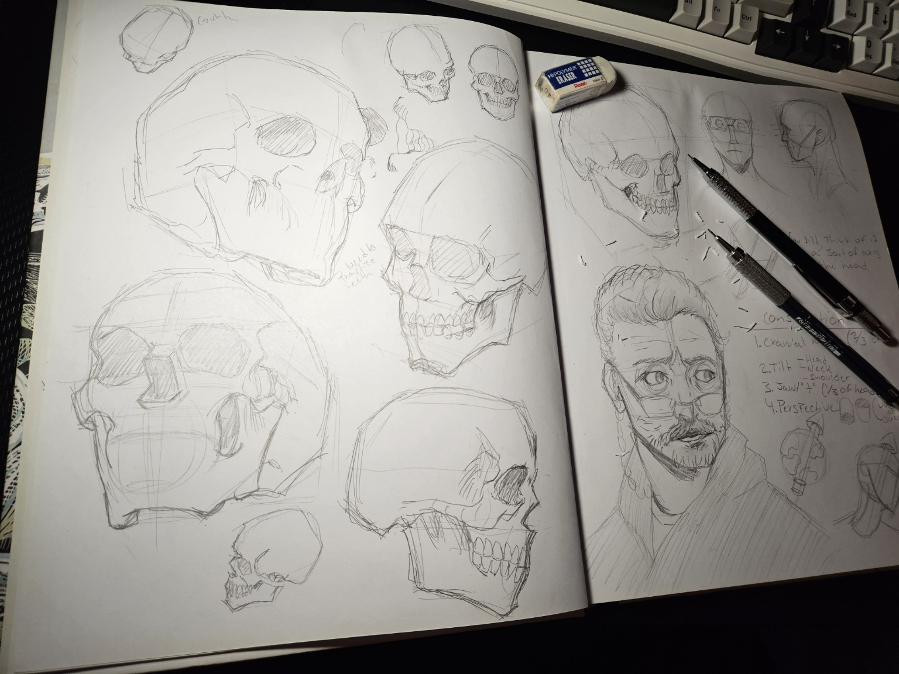

About SketchStart
Welcome to SketchStart! A beginner-friendly space dedicated to helping aspiring artists develop their drawing skills, explore new techniques, and discover the joy of creating art.
Whether you're picking up a pencil for the first time or returning to drawing after some time away, SketchStart is here to help you build your skills one step at a time.
Why I Created SketchStart
Art has been an important part of my life for as long as I can remember. Over the years, I've spent countless hours drawing, studying, and learning from other artists. Along the way, I've discovered just how rewarding, challenging, and sometimes frustrating learning to draw can be.
I created SketchStart to share the knowledge and resources that have helped me throughout my own artistic journey. My goal is to make learning to draw feel a little less overwhelming, especially for beginners who may not know where to start.
My Approach to Learning Art
I believe that learning to draw is a journey, not a race. Developing your skills takes time, patience, and plenty of practice, but it's equally important to enjoy the process of creating.
SketchStart encourages artists to experiment, make mistakes, and explore their own creativity without feeling pressured to achieve perfection. Whether you're practicing the fundamentals or drawing something simply because it makes you happy, every bit of progress matters.
